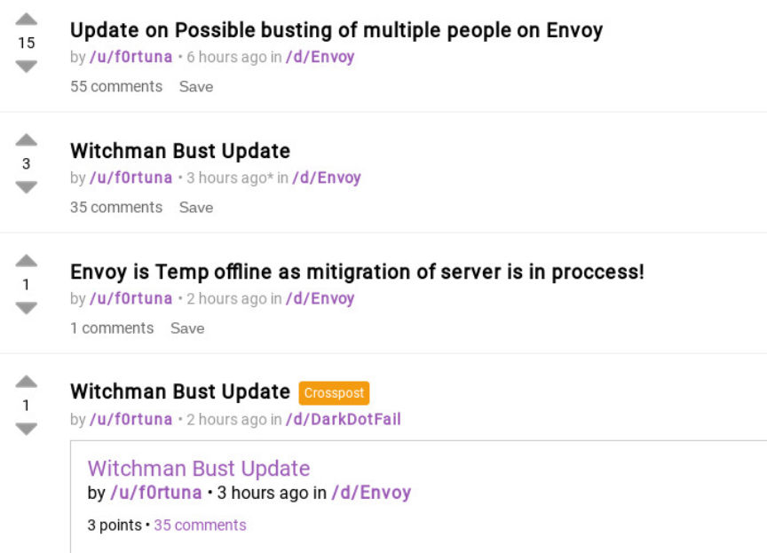
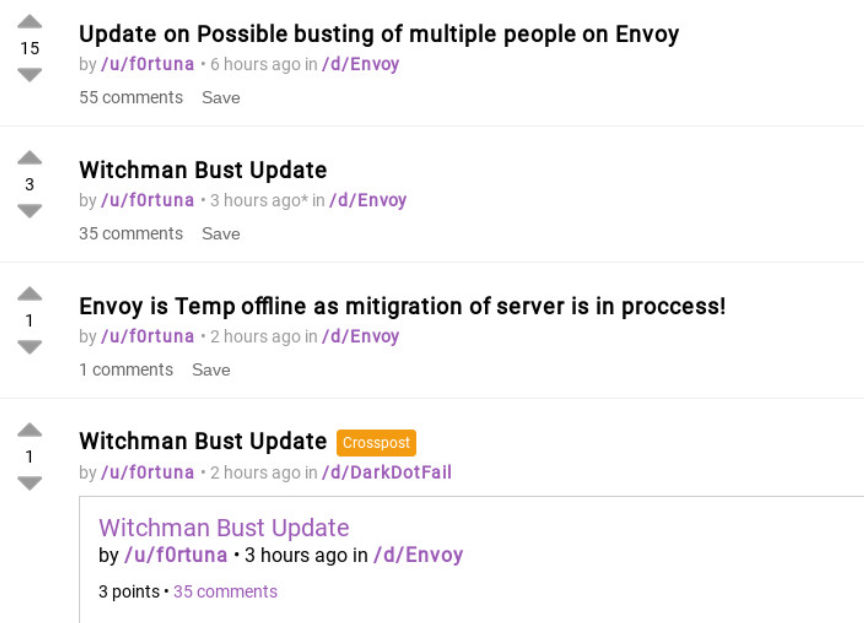

Notice: Darkweb Forum "Envoy" is Down for Maintenance
~4 min read | Published on 2019-09-14, tagged Darkweb-Market using 754 words.
The co-administrator of the darkweb forum “Envoy” shut the site down to conduct a security audit after his partner and co-administrator seemingly disappeared under suspicious circumstances.
Update 09/15/19: Unsurprisingly, Witchman05 has returned. From “I’m not busted” -
Jesus fucking Christ, I get hit by a car and shit goes crazy. You guys really can’t live without me. ;)
As the title says, I have NOT been busted. As my mysterious first sentence says, I was in the hospital following an accident involving me, a car, and my face. As this sentence says, I am still handsome and charming, so please, don’t bother asking me about my health. As THIS sentence says, what the fuck, guys?!?!?!
I don’t have kids, so why the fuck is everyone freaking out about that guy’s post? Did he bribe F0rty with Red Bull to post that shit? But although my laptop was completely destroyed (note to anybody reading this: FUCK COSTA, their coffee is shit and the car parks outside are full of idiots), I have backups! Of EVERYTHING. So kindly chill the fuck out, I’ll be offline for a couple more days before I can set everything else up again with a new computer, but when I do, I will be back on Jabber answering your worried questions as to my personal wellbeing and will I ever get back to pleasuring your women for you.
/u/HugBunter, I’m going to be honest, I’m kind of pissed you locked my account out so I couldn’t make this announcement here, but then I realized I haven’t actually set my PGP keys up on this computer, because it is shit. I dug this out from the very deepest darkest depths of my old shit in the loft, thing runs like a Commodore.
/u/F0rtuna, I am even more pissed that you can tell me “I’m going away for a couple days to move house, if I’m not back on the 12th, call DarknetLive”, then the minute you get back, you make an announcement I’m busted and take my site offline. SHAME ON YOU. It is for this reason I will ask you kindly to throw your “life phone” in the river and stop calling while I’m having sex with your girlfriend. By the way, you left a couple milkshakes here. YOU LEFT BOTHER.
So yeah. Chill out, I myself am not busted, but just in case, keep your guards in place until I can get back on a dedicated criminaling computer and sign this message with my PGP key. I’ll be verifying myself on this account to whoever I can, just to reassure people I’m still here and unarrested.
It is touching to see such an outpouring of emotion for me, though. Just, damn, guys. :')
F0rtuna, the admin of Envoy, warned users on Dread that he had lost contact with his co-administrator and suspected that law enforcement had a role in the person’s disappearance. At this point in time—between three and four days since last contact—no evidence exists to support the theory involving law enforcement. However, those who spoke with the co-admin, a former moderator of Dread known as Witchman05, agreed that such an unplanned absence was highly suspect. Additional evidence indicates that others connected to both F0rtuna and Witchman05 have disappeared in a similar fashion.
Witchman05 recently revealed that he had been working on a new darkweb marketplace. F0rtuna suggested that Witchman05’s activities involving the upcoming market had attracted the attention of law enforcement.
F0rtuna is concerned that law enforcement could have used Witchman05’s elevated access to Envoy to further an investigation into users of the forum. He pulled the forum offline to review the code and burn the server that Witchman05 had the ability to access.
This post serves as an announcement of Envoy downtime rather than a post about any law enforcement operation. A future article will cover the actual events that led F0rtuna to the conclusion that law enforcement had apprehended his partner and that certain users are no longer in control of certain user accounts.
Below is F0rtuna’s message on Envoy:
Envoy forum is making mitigration on new server and checking files and hardering script as “admin” witchman05 is possibly busted please visit our subdread /d/Envoy for more details if you don’t know what is dread take link from www.dark.fail. Server information was always under mine control and witchman didn’t have access to it but i am taking OPSec measures check this message and my pgp key at envoys5appps3bin.onion/pgp.txt You can check this Message signed with my pgp at envoys5appps3bin.onion/signed.txt F0rtuna Techmin of Envoy.
Update 09/15/19: Unsurprisingly, Witchman05 has returned. From “I’m not busted” -
Jesus fucking Christ, I get hit by a car and shit goes crazy. You guys really can’t live without me. ;)
As the title says, I have NOT been busted. As my mysterious first sentence says, I was in the hospital following an accident involving me, a car, and my face. As this sentence says, I am still handsome and charming, so please, don’t bother asking me about my health. As THIS sentence says, what the fuck, guys?!?!?!
I don’t have kids, so why the fuck is everyone freaking out about that guy’s post? Did he bribe F0rty with Red Bull to post that shit? But although my laptop was completely destroyed (note to anybody reading this: FUCK COSTA, their coffee is shit and the car parks outside are full of idiots), I have backups! Of EVERYTHING. So kindly chill the fuck out, I’ll be offline for a couple more days before I can set everything else up again with a new computer, but when I do, I will be back on Jabber answering your worried questions as to my personal wellbeing and will I ever get back to pleasuring your women for you.
/u/HugBunter, I’m going to be honest, I’m kind of pissed you locked my account out so I couldn’t make this announcement here, but then I realized I haven’t actually set my PGP keys up on this computer, because it is shit. I dug this out from the very deepest darkest depths of my old shit in the loft, thing runs like a Commodore.
/u/F0rtuna, I am even more pissed that you can tell me “I’m going away for a couple days to move house, if I’m not back on the 12th, call DarknetLive”, then the minute you get back, you make an announcement I’m busted and take my site offline. SHAME ON YOU. It is for this reason I will ask you kindly to throw your “life phone” in the river and stop calling while I’m having sex with your girlfriend. By the way, you left a couple milkshakes here. YOU LEFT BOTHER.
So yeah. Chill out, I myself am not busted, but just in case, keep your guards in place until I can get back on a dedicated criminaling computer and sign this message with my PGP key. I’ll be verifying myself on this account to whoever I can, just to reassure people I’m still here and unarrested.
It is touching to see such an outpouring of emotion for me, though. Just, damn, guys. :')
F0rtuna, the admin of Envoy, warned users on Dread that he had lost contact with his co-administrator and suspected that law enforcement had a role in the person’s disappearance. At this point in time—between three and four days since last contact—no evidence exists to support the theory involving law enforcement. However, those who spoke with the co-admin, a former moderator of Dread known as Witchman05, agreed that such an unplanned absence was highly suspect. Additional evidence indicates that others connected to both F0rtuna and Witchman05 have disappeared in a similar fashion.
A Screenshot of the Warning Posts on Dread
Witchman05 recently revealed that he had been working on a new darkweb marketplace. F0rtuna suggested that Witchman05’s activities involving the upcoming market had attracted the attention of law enforcement.
F0rtuna is concerned that law enforcement could have used Witchman05’s elevated access to Envoy to further an investigation into users of the forum. He pulled the forum offline to review the code and burn the server that Witchman05 had the ability to access.
This post serves as an announcement of Envoy downtime rather than a post about any law enforcement operation. A future article will cover the actual events that led F0rtuna to the conclusion that law enforcement had apprehended his partner and that certain users are no longer in control of certain user accounts.
Below is F0rtuna’s message on Envoy:
Envoy forum is making mitigration on new server and checking files and hardering script as “admin” witchman05 is possibly busted please visit our subdread /d/Envoy for more details if you don’t know what is dread take link from www.dark.fail. Server information was always under mine control and witchman didn’t have access to it but i am taking OPSec measures check this message and my pgp key at envoys5appps3bin.onion/pgp.txt You can check this Message signed with my pgp at envoys5appps3bin.onion/signed.txt F0rtuna Techmin of Envoy.